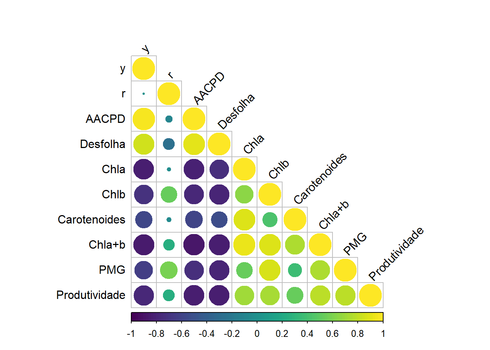

library(r4pde)
library(gsheet)
library(tidyverse)
library(patchwork)
library(AgroR)
library(viridis)
library(vegan)
library (MASS)
library(corrplot)
library(DT)Análise de Correlação
Realização da análise de correlação entre as variáveis respostas para maior entendimento dos ensaios
Carregamento dos pacotes
Importação dos dados
dados <- gsheet2tbl("https://docs.google.com/spreadsheets/d/1t1oOnimLXdx6rqtDiYg6wNXB2byY8_Z-/edit?gid=1891383351#gid=1891383351")
head(dados)# A tibble: 6 × 13
EXPERIMENTO Tratamento BLOCO y r AACPD Desfolha Chla Chlb
<dbl> <chr> <dbl> <dbl> <dbl> <dbl> <dbl> <dbl> <dbl>
1 1 Controle 1 0.769 1.00 11.8 4.12 0.394 0.199
2 1 Controle 2 0.805 0.992 13.8 4.5 0.378 0.183
3 1 Controle 3 0.7 0.994 12.8 4 0.532 0.23
4 1 Controle 4 0.87 0.952 13.6 4 0.572 0.244
5 1 Fungicida 1 0.0262 0.892 0.907 1.1 1.68 1.59
6 1 Fungicida 2 0.025 0.889 0.875 1.15 1.59 1.35
# ℹ 4 more variables: Carotenoides <dbl>, `Chla+b` <dbl>, PMG <dbl>,
# Produtividade <dbl>Matriz de correlação
# A matriz de correlação
cor1 <- dados[,4:13]
corelacao1 <- cor(cor1)
head(corelacao1) y r AACPD Desfolha Chla Chlb
y 1.00000000 0.01070458 0.96291321 0.8431826 -0.82333783 -0.7196864
r 0.01070458 1.00000000 -0.09441483 -0.2721658 -0.03037263 0.5302309
AACPD 0.96291321 -0.09441483 1.00000000 0.9058951 -0.81876446 -0.7622473
Desfolha 0.84318258 -0.27216583 0.90589510 1.0000000 -0.73122763 -0.7899772
Chla -0.82333783 -0.03037263 -0.81876446 -0.7312276 1.00000000 0.6498367
Chlb -0.71968638 0.53023095 -0.76224728 -0.7899772 0.64983671 1.0000000
Carotenoides Chla+b PMG Produtividade
y -0.56560372 -0.8500198 -0.6356123 -0.7747291
r -0.04290742 0.2522379 0.5897477 0.2592766
AACPD -0.58447617 -0.8692923 -0.7245302 -0.8204386
Desfolha -0.52888742 -0.8276352 -0.7930172 -0.8223905
Chla 0.89152345 0.9224608 0.5220803 0.7159444
Chlb 0.43423030 0.8902181 0.8761342 0.7273698Plot do Gráfico de Corrrelação
# Crição de uma paleta de cores usando a paleta viridis
viridis_colors <- viridis(100)
# Plot da matriz de correlação usando a paleta viridis
corrplot(corelacao1, type = "lower", col = viridis_colors, tl.col = "black", tl.srt = 45)
Observação de maior correlação negativa entre produtividade e desfolha, e produtividade e AACPD
Plot das Correlações Produtividade X Desfolha, Produtividade X AACPD e Produtividade X y
theme_set(r4pde::theme_r4pde(font_size = 10))
plot1 <- cor1 %>%
ggplot(aes(x = Desfolha, y = Produtividade)) +
geom_point() +
geom_smooth(method = "lm") +
labs(x = "Desfolha", y = expression("Produtividade (kg " * ha^{-1} * ")"))
plot2 <- cor1 %>%
ggplot(aes(AACPD, Produtividade))+
geom_point()+
geom_smooth(method = "lm") +
labs(x = "AACPD", y = " ")
plot3 <- cor1 %>%
ggplot(aes(y, Produtividade))+
geom_point()+
geom_smooth(method = "lm")+
labs(x = "y", y = " ")
Produtividade_Correlação <- plot1|plot2|plot3
Produtividade_Correlação